A guided introduction to governed decision support.
How to read recommendations, compare engines, run offline benchmarks,
and stay inside the safety boundaries that make FINRLX a research and
decision-support platform — not a trading terminal.
Audience
First-time users, analysts, research operators, administrators
Edition
Beginner, v1.0 · April 2026
Scope
Web product, iOS companion, governance & research workflows
Status
Decision support only · Not a broker · No live execution
QuantPipeline / FINRLXConfidential — Internal use
How to read this manual
This manual introduces FINRLX from the perspective of someone seeing
the system for the first time. It is organized in three arcs:
Foundations (what the platform is and the rules it enforces),
The product (the screens themselves), and
Working with FINRLX (workflows, examples, and recovery).
Every screenshot in this document is taken directly from the shipped
design package. Captions explain the task a screen supports,
not just its name. Where a workflow has a hard governance boundary
— research vs. production, offline vs. live — that boundary is called
out in a safety panel alongside the prose.
Important
FINRLX is a decision-support and research platform. It is not a
broker, not an order-management system, and not an automated
trading system. Nothing in this manual — and nothing the product
shows you — should be read as an instruction to place a trade.
Chapter 1
Product overview
FINRLX organizes evidence from multiple analytical engines into a
structured decision workflow that a human can review, challenge,
document, and audit.
1.1 What FINRLX is
FINRLX — also referred to as QuantPipeline in the design
package — is a decision-support platform for medium-horizon
investment analysis. It combines several analytical engines and
research workflows into one controlled environment, then presents
the output in a form that a human user can review, challenge,
monitor, and document.
The platform is designed for users who need more than a market-data
dashboard. Instead of only showing prices, charts, or news, FINRLX
organizes evidence from several sources into a structured decision
workflow built around six steps:
Collect and normalize data.
Run multiple analytical engines.
Compare engines and surface agreement or disagreement.
Generate a decision-support view.
Preserve auditability and governance.
Allow offline research and benchmarks without affecting production.
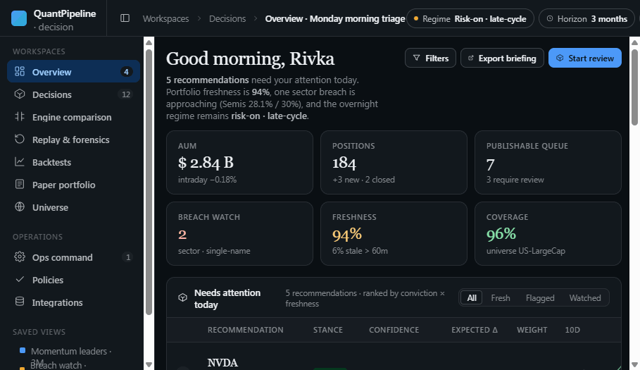
Figure 1.1 — The Overview screen. The morning-triage
surface. Top recommendations on the left, portfolio health and
confidence indicators in the middle, recent activity on the right.
Read it as the answer to “what changed since I last looked, and
what needs attention now?”
1.2 Questions FINRLX is designed to answer
What changed since the last review?
Which assets are supported by multiple engines?
Where do engines disagree, and why?
What is the quality and freshness of the underlying data?
What would a historical replay or benchmark show?
Is a research model promising enough to keep investigating?
Is any output safe, audited, and clearly separated from production?
1.3 What FINRLX is not
A brokerageAn OMSA trading terminalAn auto-trading botLive RL executionPersonal adviceA replacement for judgment
The system can display research candidates, imported artifacts,
benchmarks, and simulated or paper results — but these exist for
analysis only. They do not place orders and do not route
instructions to a broker.
1.4 The value proposition
The value is not only the score or the recommendation. The value is
the controlled process around it:
Evidence before actionDecisions are anchored to the data and engines that produced them.
Confidence ≠ data qualityTwo distinct measures, never collapsed into one number.
Disagreement made visibleThe system surfaces where engines diverge instead of hiding it.
Research isolated from productionImported research candidates cannot be promoted automatically.
Fingerprinted benchmarksEvery benchmark stores audit trail and result fingerprint.
Honest empty statesIf something can’t be verified, the UI says so explicitly.
Chapter 2
Conceptual model
Before touching screens, internalize the loop the product is built
around and the entities that move through it.
2.1 The decision-support loop
Every workflow in FINRLX is a variation on the same seven-step
loop. The product surfaces are arranged around it:
1TriageOverview
2InvestigateDecision Workspace
3CompareEngine Comparison
4ReplayReplay
5BenchmarkBacktests · Ops
6GovernOps · Policy
7DocumentNotes · Audit
The loop has a deliberate asymmetry: a user can review evidence and
simulated results, but the system does not execute trades.
That asymmetry is the central design constraint of the entire
product.
2.2 The main entities
Recommendation
The platform’s structured decision-support object. It may
summarize multiple engine outputs and contextual evidence for a
specific asset, universe, or portfolio question. A recommendation
is not an instruction to trade — it is a record that can
be reviewed, challenged, monitored, or published to a controlled
workflow depending on role and governance settings.
Engine
A source of analytical judgment. Examples include:
Technical engine
Fundamental / quality engine
Sentiment / news engine
Machine-learning engine
Reinforcement-learning research engine
Rule-based / policy-constrained engine
The platform is designed to show both the result and the
reasoning context behind an engine’s output.
Candidate
A model, policy, research artifact, or analytical agent that can
be evaluated in isolation. Recent FinRL-X research candidates are
explicitly marked as research-only,
offline-only, and shadow-only.
Benchmark report
An offline evaluation result. It compares one or more agents
under the same controlled conditions and stores metrics, reward
breakdowns, forensic traces, safety flags, and fingerprints.
Artifact
An offline output from a local research environment. For example,
a local CPU PPO/A2C experiment can produce a JSON artifact. The
backend can validate and import such artifacts as research-only
candidates without running neural inference in production.
Audit event
A record that something important happened — a benchmark was
requested, a candidate was imported, a research training stub was
run, or a candidate benchmark completed. Audit events support
traceability and governance.
Chapter 3
High-level architecture
Six layers, two runtimes, and one strict rule: production never
runs neural inference.
3.1 The six layers
User Interface — Overview · Decisions · Compare · Replay · Backtests · Policy · Paper · Universe · Ops
Signal & engine layer — technical · fundamental · sentiment · ML · RL · rule
Data layer — assets · features · prices · policy snapshots · benchmark reports · audit · research metadata
Figure 3.1 — Architectural layers. The UI sits on
top of governance, which gates everything below. Decision and
benchmark layers are siblings, never parents of each other:
benchmarks cannot influence live recommendations.
3.2 Frontend
The frontend is a Next.js application. It exposes the surfaces a
user navigates between: Overview, Decisions,
Engine Comparison, Replay, Backtests,
Paper Portfolio, Policy Editor,
Universe, Integrations, and the
Admin / Ops command center.
3.3 Backend
The backend is a FastAPI service. It exposes versioned endpoints
under /api/v1 and contains services for
recommendations and overview, publication status, the model
registry, the RL adapter and benchmark services, FinRL-X research,
candidate import and isolation, and audit and governance.
The backend deliberately keeps neural RL dependencies out of the
production runtime. Production does not require torch,
gymnasium, or stable-baselines3.
3.4 Research environment
Research infrastructure is separated from production. Local CPU
PPO/A2C experiments live under research/finrlx_cpu/.
That area can contain a local Dockerfile, research dependencies, a
Gymnasium-compatible environment, training scripts, an artifact
schema, and local outputs. These outputs are not
automatically trusted by production. They must be
validated and imported as research-only artifacts.
3.5 Why production does not run neural inference
Design rule
Production does not load neural model files or execute PPO/A2C
forward passes. Instead, imported research candidates are
benchmarked using a safe surrogate adapter. The current adapter
identifier is
score_weighted_fallback_surrogate: a
deterministic score-weighted fallback. It does not claim real
neural inference.
Chapter 4
Data & information sources
FINRLX separates three things people often conflate: how confident
the model is, how good the data is, and whether the pipeline is
operationally healthy.
4.1 Categories of information
Category
Typical contents
Asset metadata
Tickers, sectors, exchange, listing status
Price & return data
OHLCV, returns, volatility windows
Engine scores
Per-engine signal output and reasoning context
Recommendations
Structured decision-support records
Publication status
What was published, by whom, under which policy
Features
Engineered inputs to engines and models
Policy snapshots
Versioned guardrails and constraints
Benchmark reports
Offline evaluation results with fingerprints
Audit events
Who/what/when for governance-relevant actions
Research artifacts
Imported local research outputs
Imported candidates
Validated research artifacts surfaced as candidates
4.2 Three independent measures
The Overview, the Decision Workspace, and the operational pages
each draw on three measures that the product treats as independent:
Confidence
How strongly the system supports a view under current assumptions.
Data quality
Freshness, completeness, and provenance of the underlying data.
Operational readiness
Pipeline health — feeds, schedulers, last successful runs.
A high model score backed by stale or incomplete data is not the
same as a high score backed by fresh, reliable data. The UI never
collapses these into a single number.
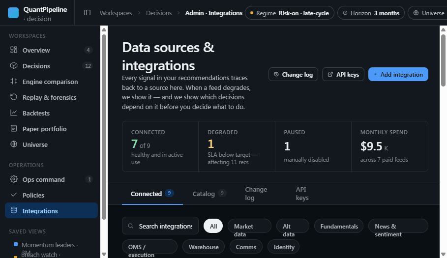
Figure 4.1 — Integrations. The source-of-truth
for connections to market data, news, sentiment, and reference
providers. Health is shown per source and per feed; degraded
sources surface to the Overview as data-quality warnings.
4.3 Research artifacts as a special source
A local research artifact is not a production model. It is a
structured file that records information about a research
experiment. A valid artifact includes:
Artifact type and schema version
Research / offline / shadow safety flags
Algorithm — PPO or A2C
Whether training was real or synthetic
Dataset summary
Training configuration
Training metrics
Creation timestamp
Warnings
Before an artifact can enter the backend as a candidate, it must pass validation.
4.4 Production fingerprints
For sensitive workflows, the platform captures lightweight
before/after fingerprints for key production surfaces. These
fingerprints help prove that a research or benchmark operation did
not change production recommendations or publication state.
recommendations_current — the current recommendation set
publication_status — what is published right now
overview — marked unavailable when no safe stable internal snapshot exists
Honest unavailability
If a component cannot be safely snapshotted, the system says so
explicitly instead of pretending it was verified. Treat
“unavailable” as informative, not as a green check.
Chapter 5
Safety, governance & boundaries
Eight principles, five isolation checks, one audit trail, one rule
users should never assume away.
5.1 Core safety principles
Research outputs are not production decisions.
Imported artifacts are not promoted automatically.
Benchmarks do not affect live recommendations.
No broker path exists in the product workflow.
Offline and shadow workflows must be labeled clearly.
All meaningful research actions are auditable.
Unsafe or ambiguous states are shown honestly.
Confidence is never collapsed with data quality.
5.2 Key safety labels
The following labels appear throughout the product. They are not
decorative — they describe real governance boundaries enforced by
the backend:
Research onlyOffline onlyShadow onlyNo broker executionNo production influenceNo publication influenceNot eligible for promotionNo neural inference in production
5.3 The five isolation checks
Candidate isolation is the system’s assertion that a research
candidate cannot be used for unsafe paths. All five must pass for
the candidate to surface as “isolated”:
Promotion blocked
Publication blocked
Live recommendation use blocked
Overview influence blocked
Broker execution blocked
Read carefully
If any of these checks is missing or false, the UI must not
display a green all-safe state. Treat that as a hard stop, not a
minor caveat.
5.4 The audit trail
The audit trail records:
Benchmark requested
Benchmark completed
Candidate imported
Candidate benchmark requested
Candidate benchmark completed
Import rejected
Audit records answer: who or what initiated the action, what
inputs were used, what result was created, and whether safety
checks passed.
5.5 What you should never assume
A high benchmark result is an investment recommendation.
A research candidate can be promoted.
A local artifact is trusted just because it was imported.
A neural model ran in production.
The system has placed, or can place, trades.
Chapter 6
Roles & responsibilities
Four roles, four lanes. Most users will live in one of them most
of the time.
Portfolio decision user
Reviews the Overview, Decision Workspace, Engine Comparison, Replay, and Paper Portfolio.
Reviews the current opportunity set
Opens recommendations for deeper evidence
Compares engines and inspects disagreement
Decides to monitor, defer, or publish (per role)
Research operator
Works with benchmark, backtest, and research workflows.
Runs offline benchmarks
Imports research artifacts
Reviews benchmark history and fingerprints
Confirms research outputs remain isolated
Admin / Ops
Monitors platform health, audits, publication status, and research guardrails.
Checks data health and publication state
Reviews audit events
Verifies benchmark governance
Confirms candidate isolation and that no production influence occurred
Developer / quant researcher
Works with local research infrastructure and artifact generation.
Runs local CPU PPO/A2C experiments
Produces JSON artifacts
Understands artifacts are untrusted by default
Hands off to the import & validation workflow
Chapter 7
A tour of the screens
One section per surface. Read the captions — they describe the
task each screen exists to support.
7.1 Overview — daily triage
The Overview is the first screen of every session. It answers
“what requires attention now?” by leading with top recommendations,
portfolio health and data-quality indicators, and a recent activity
feed. Use it as a jump-off, not as a place to make decisions.
7.2 Decision Workspace — single-recommendation deep dive
The Decision Workspace is the deep-dive surface. From a single
recommendation it lays out the thesis, evidence modules, scenario
controls, risks, and a context pane on the right. Use it to
challenge a recommendation rather than only to read it.
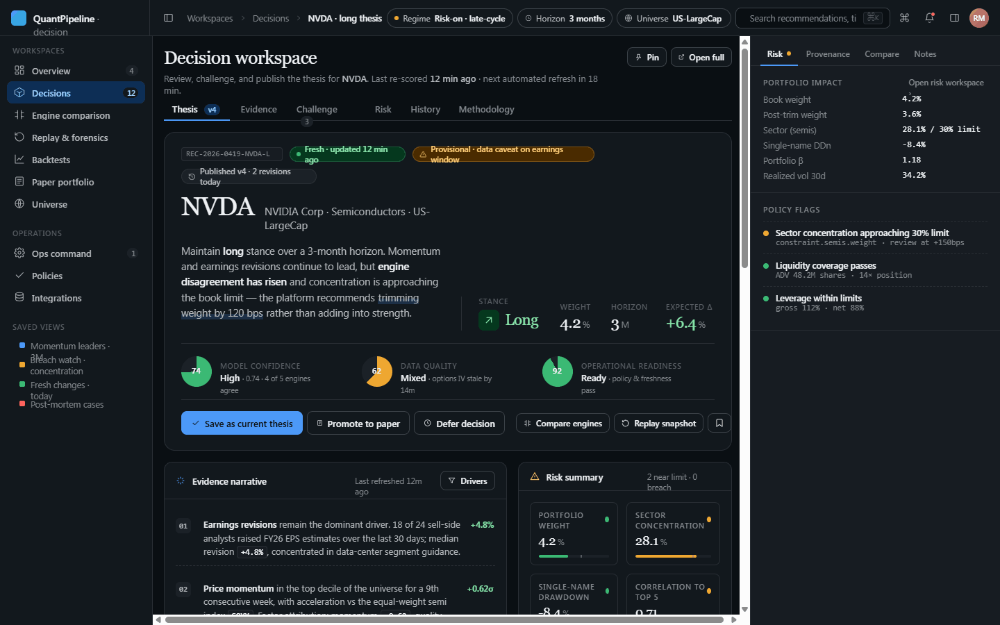
Figure 7.2 — Decision Workspace. The hero
summarises the thesis and confidence trio. Below, evidence
modules expand into engine reasoning, scenario sliders, and risk
notes. The right pane keeps related context — alerts, history,
notes — close at hand.
7.3 Engine Comparison — agreement & disagreement
The Engine Comparison view is where you go when you want to know
whether a recommendation rests on broad evidence or on a single
loud engine. Engines are presented side-by-side with vote
direction, confidence, methodology notes, and conflicting
evidence.
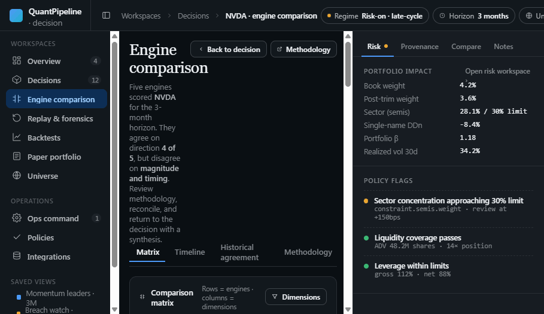
Figure 7.3 — Engine Comparison. Agreement is
informative; disagreement is more so. The synthesis row at the
bottom names the dominant signal and the loudest dissent.
7.4 Replay — historical forensics
Replay is the time-machine. It reconstructs what the system would
have known and recommended at any prior point. Use it to ask
whether a signal appeared before a move, whether a view
survived new data, and which engines were responsible for a
change.
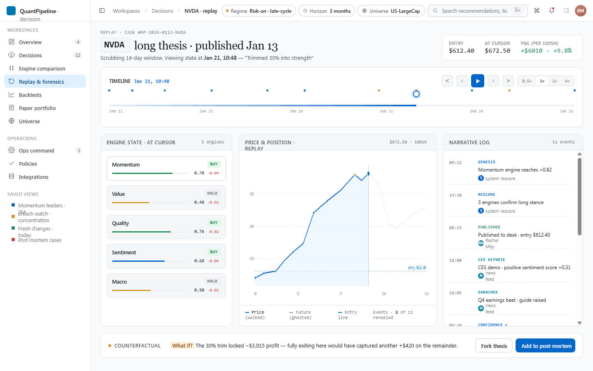
Figure 7.4 — Replay. A scrubber drives the
recommendation snapshot, evidence, and engine votes back in
time. Forensic controls let you isolate single engines or
regimes.
7.5 Backtests — offline validation
Backtests evaluate models or strategies against historical data.
They are not live recommendations. Read them for
regime-conditional behavior, drawdowns, and robustness — not as a
forecast.
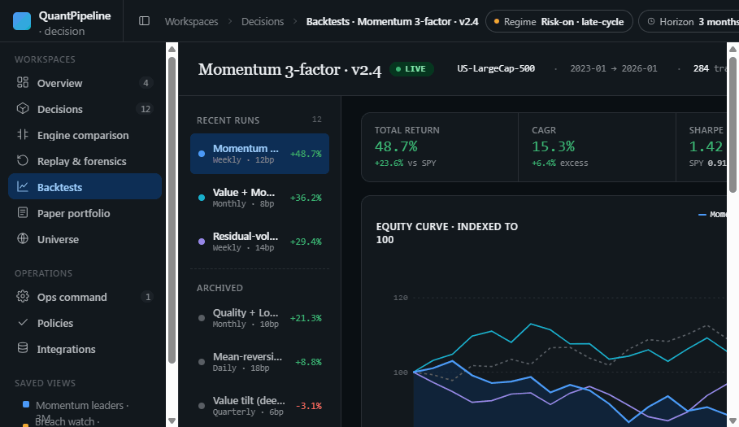
Figure 7.5 — Backtests. Each tear sheet carries
status badges (validated, partial, stale) so you can see at a
glance whether the result is trustworthy enough to read.
7.6 Policy Editor — guardrails with live preview
The Policy Editor defines limits, concentration rules, and
operational constraints. Edits show a live impact preview so the
user can see which current recommendations a change would touch
before saving the policy.
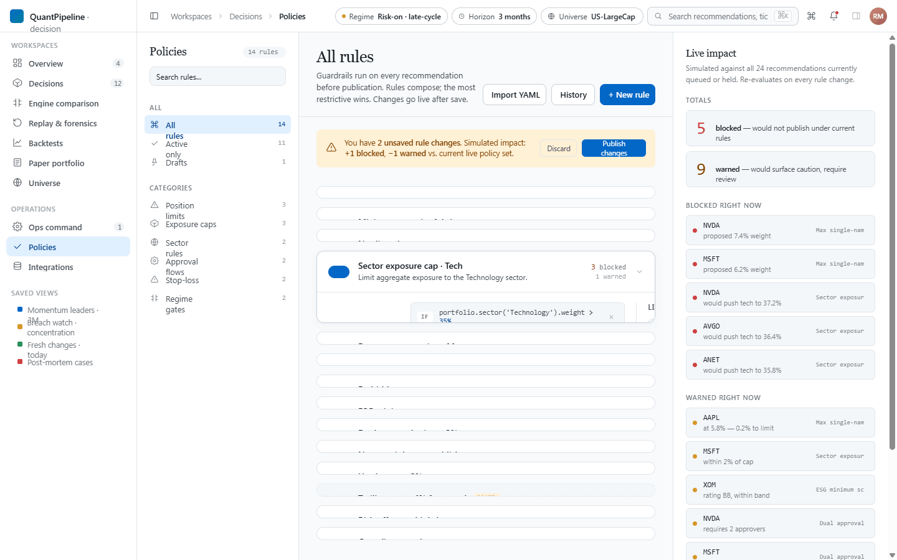
Figure 7.6 — Policy Editor. Guardrails on the
left, live impact preview on the right. Saving creates a new
versioned policy snapshot referenced by future recommendations.
7.7 Paper Portfolio — simulated performance
Paper Portfolio displays simulated portfolio performance for
published or monitored recommendations. It does not place orders
and is not a broker account. Read it as a feedback loop on
published research.
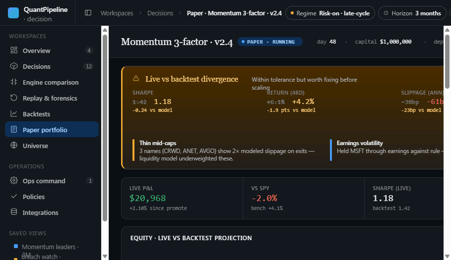
Figure 7.7 — Paper Portfolio. Simulated P&L,
exposure, and per-recommendation monitoring. No broker
connection, by design.
7.8 Universe — assets in scope
Universe manages saved groups of assets, filters, and versioned
universe definitions. Use it to decide what is in and out of scope
before opening Decision Workspace or running a benchmark.
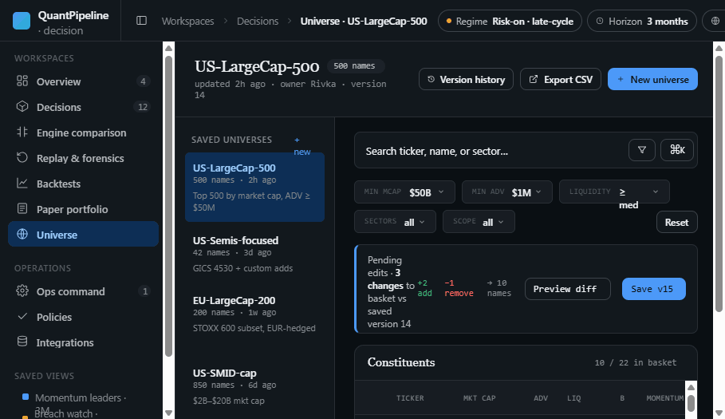
Figure 7.8 — Universe. Filters left, factor
exposure right, saved universes pinned. Universes are versioned
so older benchmarks remain reproducible.
7.9 Integrations — source & feed health
Integrations is the catalog of upstream data sources and their
connection state. It is the place to confirm whether something is
upstream-degraded before assuming a recommendation is wrong.
Figure 7.9 — Integrations. Each tile shows
health, last successful pull, and whether a source is gated by
governance.
7.10 Admin / Ops — command center
Admin / Ops is the command center for governance, audit, benchmark
operations, and research workflows. It surfaces benchmark
run-controls, the audit trail, FinRL-X research status, imported
candidate review, and operational health.
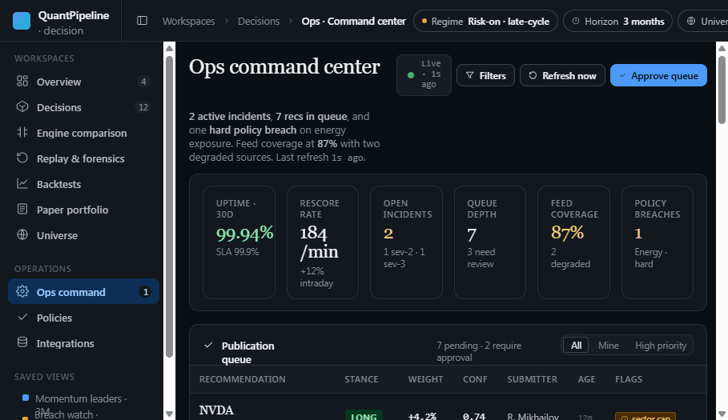
Figure 7.10 — Ops. Five lanes: data &
publication health, benchmark run, benchmark audit, FinRL-X
research, and imported research candidates.
7.11 Onboarding — first-run sign-in & org setup
Onboarding takes a new user through sign-in, organization setup,
the role model, and team invites. It also explains the safety
boundaries above before the user reaches the Overview.
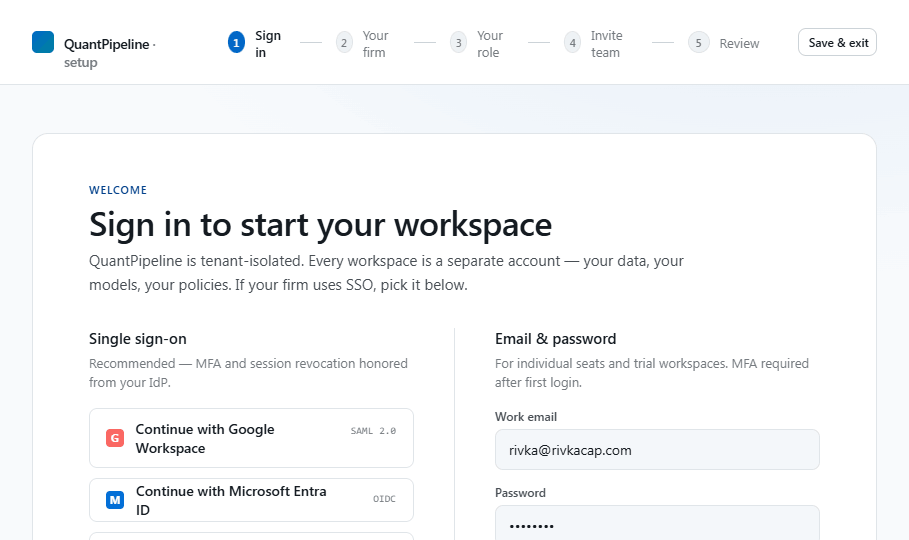
Figure 7.11 — Onboarding. The flow ends with
the user understanding both their role and the boundaries the
role does not cross.
7.12 Design System — the visual vocabulary
The Design System documents tokens, components, type, icons, and
motion. End users do not need to read it, but recognising its
components on other screens is the fastest way to learn how the
product communicates state.
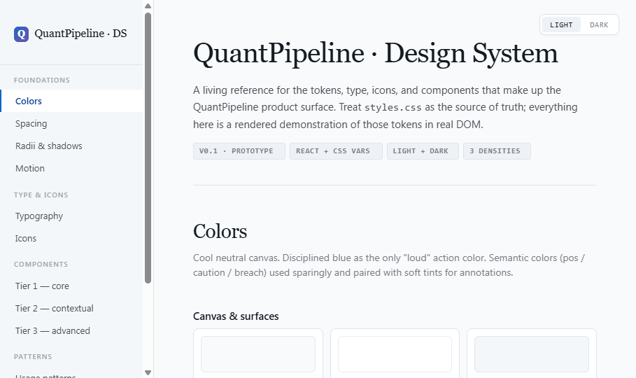
Figure 7.12 — Design System. If a badge,
status, or input looks unfamiliar somewhere in the product, this
page is where to find its definition.
7.13 iOS companion app
The iOS app is a triage and review companion — not a full
replacement for the web product. It exposes Today / triage,
Decision detail, Alerts, Comparison, Replay, Watchlist, Notes, and
a Publish flow. Research and admin work continues on the web.
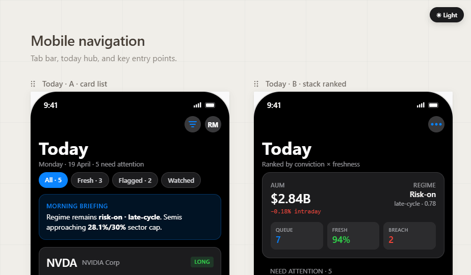
Figure 7.13 — iOS companion. Read-and-review
with the same trust trio and disagreement signals as the web
product. No broker, no execution, no exception.
7.14 The screen index
A single catalog page lists every shipped surface with a thumbnail
and a one-line description. It is useful as a sanity-check that
you are reading the right screen for your task.
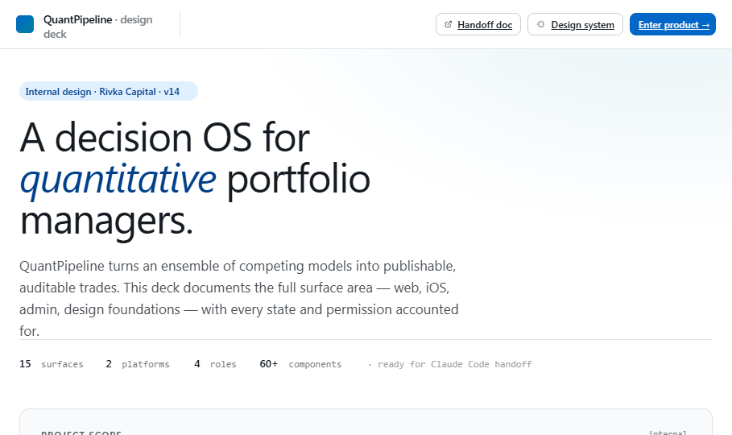
Figure 7.14 — Index. Every product surface in one place.
Chapter 8
Beginner quick-start workflow
Six steps for your first session. Do them in order — the loop is
the point.
1
Open the Overview
Look for top recommendations, the trust trio (confidence, data quality, ops readiness), and warnings. Don’t jump straight to research.
2
Open a deep dive
Pick one recommendation and open Decision Workspace. Read the thesis and evidence; ask whether the conclusion rests on broad or narrow signal.
3
Compare engines
Open Engine Comparison. Note which engines agree, which dissent, and whether any disagreement is methodological rather than directional.
4
Replay if surprised
If the output is surprising, walk it back through Replay. When did this signal first appear? What changed it?
5
Check governance
Open Ops. Confirm data health, publication state, audit recency, and that no isolation check is failing silently.
6
Run only safe offline workflows
If your role allows it, run benchmarks. Always check the offline/shadow acknowledgement, and never read a benchmark as a live signal.
Chapter 9
Understanding recommendations
A recommendation is a structure, not a number. Read all of it.
9.1 Recommendation structure
Asset or universe context
Directional thesis or summary
Confidence
Engine evidence
Risk factors
Data quality
Operational readiness
Suggested monitoring or review state
9.2 Confidence is not certainty
Confidence is an internal measure of how strongly the system
supports a view under current assumptions. It is not a
guarantee. A high-confidence output can still be wrong if data is
stale, a new event changes the situation, engines share a blind
spot, the regime changes, or a policy constraint conflicts with
the recommendation.
9.3 Disagreement is information
Disagreement is not a bug. The system is built to surface it. Some
useful patterns:
ML engine high confidence, rule-based engine neutral.
Research candidate strong in benchmark, baseline weak.
9.4 The evidence hierarchy
When reviewing a recommendation, look for these in order:
Strong multi-engine agreement.
Fresh data.
A clear thesis you can articulate in one sentence.
Low operational risk.
Reasonable scenario behaviour.
Replay support — the signal didn’t appear yesterday.
No policy conflicts.
If these conditions aren’t met, treat the recommendation cautiously.
Chapter 10
Backtests, benchmarks & replay
Three names, three different jobs. Don’t conflate them.
10.1 The three terms
Term
Purpose
Typical question
Backtest
Historical validation of a model or strategy
How would it have performed historically?
Benchmark
Controlled offline comparison of agents
How does this candidate compare with baselines?
Replay
Forensic reconstruction of a past recommendation
What did the system know then?
10.2 What an offline benchmark report contains
Agent list (requested vs executed)
Skipped agents and reasons
Metrics by agent
Reward breakdown
Forensic summary by agent
Result fingerprint
Safety flags
Invariant checks
Warnings
10.3 Baseline agents
Common baselines that imported candidates are compared against:
heuristic_baseline
random_valid
score_weighted_baseline
10.4 Imported candidate benchmarks & the surrogate
When an imported research candidate is benchmarked in production,
the inference mode is
score_weighted_fallback_surrogate. The
benchmark is deterministic and safe; it does not run a neural
network. The result is comparable in structure to a baseline run,
but it is not real neural inference.
10.5 Reading benchmark metrics
No single metric is decisive. A high return paired with high
drawdown or high turnover is often less attractive than a stable
result. Read the metrics together:
Total return
Total reward
Maximum drawdown
Turnover
Step count
Violations / warnings
Chapter 11
FinRL-X research workflow
Reinforcement learning, kept on a short leash. Local-only,
offline-only, never auto-promoted.
11.1 Why FinRL-X is isolated
FinRL-X introduces neural RL concepts such as PPO and A2C. These
methods are useful for experimentation but more complex and
riskier than deterministic baselines. The product therefore:
Does not install neural dependencies in production
Does not run PPO/A2C inference in production
Validates local research artifacts before they can be imported
Blocks promotion of imported candidates
Keeps benchmark results offline and shadow-only
11.2 The local research container
The research environment lives at research/finrlx_cpu/. Typical local commands:
cd research\finrlx_cpu\scripts
.\run_research_container.ps1 -Algorithm PPO -Timesteps 200 -Seed 42
These workflows are local research only. They do not touch production by default.
11.3 Artifact validation
Before import, the backend validates required fields and safety flags. A valid artifact must clearly declare:
Research only
Offline only
Shadow only
Not eligible for promotion
No broker execution
No publication influence
No recommendation pollution
Algorithm — PPO or A2C
CPU-only
Whether data is synthetic
Training configuration and metrics
11.4 Importing & benchmarking
Artifact import is a controlled backend workflow that requires
explicit acknowledgement and creates a research-only candidate
with: artifact hash, summary, policy type, training mode, safety
flags, isolation checks, production fingerprints, and audit
events. The imported candidate is not eligible for
promotion.
Once eligible, the candidate can be benchmarked offline either
against baselines or candidate-only. The benchmark context must
clearly state:
Inference mode is score_weighted_fallback_surrogate.
Real neural inference is false.
Artifact metadata is not used for neural inference.
The candidate remains not eligible for promotion.
Figure 11.1 — Imported research candidates on Ops.
Each candidate row exposes the artifact hash, isolation checks,
benchmark eligibility, and a research-only benchmark form.
Chapter 12
Admin / Ops workflows
Five lanes, every one of them auditable.
12.1 Run an offline benchmark
Enter a benchmark name (avoid “test”, “run1”).
Choose start and end dates.
Select agents.
Confirm the offline / shadow acknowledgement.
Run, then review status, executed/skipped agents, metrics, forensic details, safety flags, and result fingerprint.
12.2 Benchmark governance & audit trail
The governance panel answers: what was run, when, by whom, which
agents, were any skipped, did safety checks pass, and what is the
result fingerprint.
The screen must make clear that this run does not execute a
neural model in production. If that statement is missing, stop.
Chapter 13
How to read common UI states
Four state families, one reading rule each.
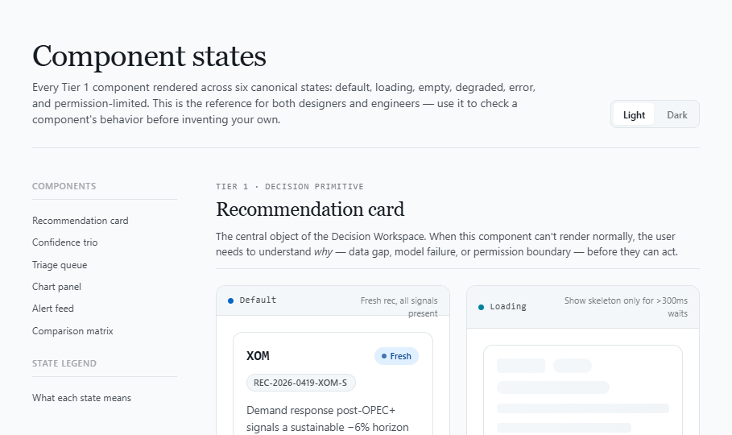
Figure 13.1 — The States gallery. Each major
surface ships with empty, loading, and error variants documented
here. If a screen looks unfamiliar, this gallery is the answer.
Positive
A check passed. Safety flag is true; isolation blocked an unsafe path; benchmark completed; data source healthy.
Caution
Review details. Data incomplete; benchmark partial; component snapshot unavailable; candidate not eligible; fallback mode in use.
Informational. No imported research candidates yet; no benchmark history for this candidate; no audit events for older benchmarks.
Chapter 14
Common workflows
Four scripts you can follow until the loop is muscle memory.
14.1 Daily analyst
Open Overview.
Review top changes and warnings.
Open a recommendation.
Review evidence and engine comparison.
Use Replay if historical behaviour matters.
Document conclusion or monitoring plan.
14.2 Research operator
Open Admin / Ops.
Check FinRL-X research status.
Validate or import a research artifact.
Select the imported candidate.
Review eligibility & isolation.
Run an offline candidate benchmark.
Compare against baselines.
Review history & fingerprints.
14.3 Admin governance
Open Admin / Ops.
Review benchmark governance & audit trail.
Check production fingerprints.
Confirm /rl/execute remains unavailable.
Review publication status & data health.
Confirm no unsafe states are hidden by green badges.
14.4 Local research
Use research/finrlx_cpu/ locally.
Run a PPO/A2C experiment in container or venv.
Generate a research artifact JSON.
Validate via the backend API.
Import as research-only candidate.
Benchmark offline.
Do not treat the result as production output.
Chapter 15
Worked examples
Three short studies in reading the product correctly.
15.1 Reviewing an imported research candidate
You open Admin / Ops and pick a candidate. Verify, in order:
Is imported_from_artifact true?
Is an artifact hash visible?
Is not_eligible_for_promotion true?
Are all isolation checks blocked?
Is the candidate benchmark eligible?
Is the benchmark inference mode clearly a surrogate fallback?
If the answer to any of these is unclear, do not run a benchmark until the issue is resolved.
15.2 Interpreting a candidate benchmark
The benchmark shows higher return than baseline, higher drawdown than baseline, inference mode score_weighted_fallback_surrogate, real neural inference false.
Correct reading
“The imported candidate’s surrogate benchmark performed well in this offline comparison, but this is not real production neural inference and not a recommendation. More validation is required.”
Incorrect reading
“The PPO model says to trade this asset now.”
15.3 Synthetic artifacts
If an artifact reports synthetic_data=true, treat it as a structural or workflow test — not a market research result. Synthetic artifacts are useful for:
Likely: nothing imported yet · candidate list failed to load · filtered view · candidate is non-imported research stub.
Action: check Admin / Ops FinRL-X status; validate & import a sample artifact if appropriate; ask Admin / Ops to review backend status.
16.2 Candidate is not benchmark eligible
Likely: missing artifact hash · missing artifact summary · invalid safety flags · not marked imported-from-artifact · not research/offline/shadow only · isolation check failed.
Action: open the eligibility reasons; do not run a benchmark until each reason is resolved.
16.3 Benchmark button is disabled
Likely: candidate ineligible · date range missing or invalid · research acknowledgement not selected · benchmark name missing.
16.4 Benchmark result is partial
Likely: an agent was skipped · the run did not include all expected agents.
Action: review skipped agents, warnings, requested vs executed, date range, and dataset availability.
16.5 Production fingerprints show overview unavailable
Likely: no safe stable internal overview snapshot function exists yet.
Action: read “unavailable” as honest, not as failure. The system marks it explicitly rather than claiming a pass.
16.6 Dependency unavailable for CPU prototype
Likely: in production this is expected — neural dependencies are not installed.
Action: the system should return dependency_unavailable cleanly and not create a candidate from a non-run.
Chapter 17
Best practices
Don’t over-trust a single number
Never rely on one score, one benchmark metric, or one engine output. Read the full evidence package.
Treat research as research
Imported candidates and offline benchmarks are research tools. They help compare ideas — they are not production decisions.
Check safety & isolation every time
Before any research-candidate workflow: not eligible for promotion, no broker execution, no production influence, no publication influence, no live recommendation use.
Read the warnings
Warnings often explain important limitations: synthetic data, surrogate inference, dependency unavailability, partial benchmarks.
Preserve auditability
Use named runs, clear notes, and date ranges that can be understood later. Avoid test, run1, foo.
Chapter 18 · Reference
Glossary
A2C
Advantage Actor-Critic — a reinforcement-learning algorithm used in research contexts.
Admin / Ops
Operational and governance area for benchmarks, audit, research status, and system health.
Artifact
A structured local research output, usually JSON, that can be validated and imported.
Artifact hash
Deterministic fingerprint of the artifact content.
Benchmark
Offline comparison of agents under controlled conditions.
Candidate
A policy, artifact, or research object that can be evaluated but not necessarily used in production.
Candidate isolation
Checks that block promotion, publication, live recommendation use, overview influence, and broker execution.
Engine
Analytical module that generates a signal or score.
FinRL-X
Research integration track for reinforcement-learning concepts and local CPU PPO/A2C artifacts.
Forensic summary
Step-level trace grouped by benchmark agent.
Imported research candidate
Candidate created from a validated local research artifact.
Inference mode
How the candidate was evaluated. In production imported-candidate benchmarks, this should be a surrogate fallback, not real neural inference.
PPO
Proximal Policy Optimization — a reinforcement-learning algorithm used in research contexts.
Production fingerprint
Lightweight before/after hash used to prove important production surfaces were not changed.
Recommendation
Structured decision-support object; not a broker order.
Replay
Historical forensic view of a prior state or recommendation.
Research-only
Cannot be treated as production output.
Shadow-only
Runs beside production without influencing it.
Surrogate benchmark
Benchmark using a safe deterministic fallback instead of neural model inference.
Chapter 19 · Reference
Screen reference
Manual section
Asset
What it answers
Product overview
Overview.html
What needs attention now?
Decision workflow
Decision Workspace.html
Why is this recommendation what it is?
Engine comparison
Engine Comparison.html
Where do engines agree and disagree?
Replay & forensics
Replay.html
What did the system know then?
Backtests
Backtests.html
How would this have performed historically?
Policy & guardrails
Policy Editor.html
What are the rules and what would changing them touch?
Paper portfolio
Paper Portfolio.html
How are published recommendations doing in simulation?
Operations & audit
Ops.html
Is the platform healthy and is research isolated?
Data & sources
Integrations.html
Are the upstream feeds healthy?
Universe
Universe.html
What is in scope for analysis?
Components, badges, forms
Design System.html
What does this UI element actually mean?
Onboarding
Onboarding.html
Sign-in, org setup, role model, invites.
iOS companion
iOS App.html
Triage and review on the go.
Chapter 20 · Reference
Safety wording guide
Use this wording
Offline benchmark
Research-only candidate
Shadow comparison
No production influence
Not eligible for promotion
No neural inference in production
No broker execution
Not used by production decisions
Avoid this wording
Buy
Sell
Trade now
Execute trade
Live signal
Best investment
Deploy policy
Production alpha
The product communicates that it supports research and decisions, but does not execute or recommend trades as live instructions. Internal copy should reflect that.
Chapter 21 · Reference
First-day checklist
Open Overview and identify the top three items requiring attention.
Open one Decision Workspace and explain the thesis in your own words.
Open Engine Comparison and identify the strongest disagreement.
Open Replay for the same recommendation.
Open Admin / Ops and find benchmark governance.
Find FinRL-X research status.
Locate Imported Research Candidates.
Select an imported candidate if one exists.
Read the artifact hash and artifact summary.
Confirm candidate isolation state.
Run an offline candidate benchmark only if eligible and your role allows it.
Explain why the result is research-only and not a production recommendation.
Chapter 22 · Reference
Administrator pre-flight
Before demonstrating the system to a new user, an administrator should verify:
/health is working.
/overview is working.
/recommendations/current is working.
/publication/status is working.
/rl/execute remains unavailable.
Admin / Ops loads.
At least one benchmark regression can run.
Imported candidate benchmark history works if candidate workflows will be demonstrated.
Safety labels are visible and not misleading.
No UI says or implies that the system can execute trades.
Chapter 23 · Reference
A 60-minute training session
00–10
Product concept
Decision support, engine comparison, governance.
10–20
Daily triage
Walk through Overview and Decision Workspace.
20–30
Evidence & disagreement
Engine Comparison and Replay.
30–40
Admin / Ops & safety
Audit, publication, benchmarks, isolation.
40–50
Research candidate workflow
Imported candidate review and offline benchmark.
50–60
Q&A and practice
Ask the user to explain why an offline benchmark is not a live recommendation.